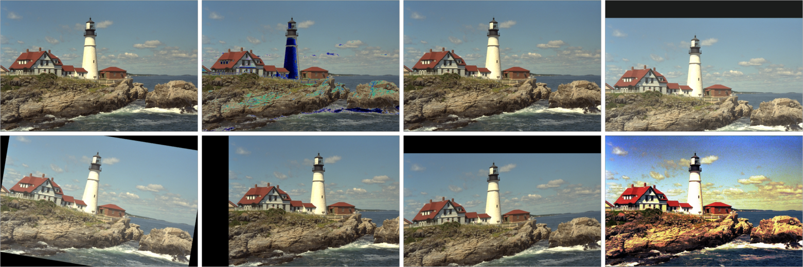
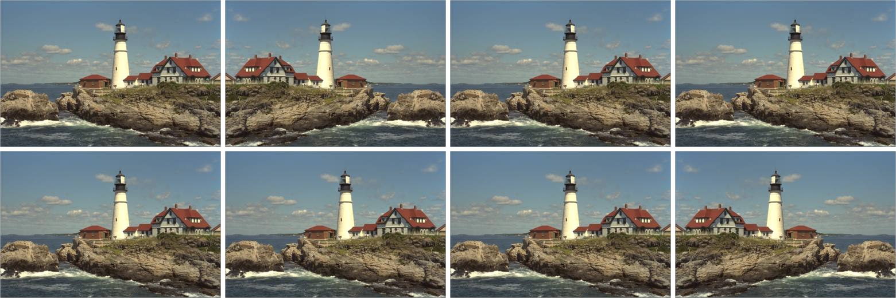

Transformations
Call a transform on an item with tfm(item). Use map(tfm, items) for a collection of independent samples. The Gallery shows what the spatial transformations look like, and the API reference documents each transform.
Composing transformations
Using transformations is easy. Simply compose them with |>:
tfm = Rotate(10) |> ScaleRatio((0.7,0.1,1.2)) |> FlipX() |> Crop((128, 128))DataAugmentation.CroppedProjectiveTransform{DataAugmentation.ComposedProjectiveTransform{Tuple{DataAugmentation.RotateND{Distributions.Uniform{Float64}}, ScaleRatio{3}, DataAugmentation.FlipAxis}}, Tuple{Crop{2, DataAugmentation.FromOrigin}}}(DataAugmentation.ComposedProjectiveTransform{Tuple{DataAugmentation.RotateND{Distributions.Uniform{Float64}}, ScaleRatio{3}, DataAugmentation.FlipAxis}}((DataAugmentation.RotateND{Distributions.Uniform{Float64}}(Uniform(-10.0, 10.0), true, nothing), ScaleRatio{3}((0.7, 0.1, 1.2)), DataAugmentation.FlipAxis(:x))), (Crop{2, DataAugmentation.FromOrigin}((128, 128), DataAugmentation.FromOrigin(), (0, 0)),))Projective transformations are fused into a single, more efficient transformation; the rest are applied one after the other.
Affine transformations
Affine transformations are a kind of projective transformation that can be composed very efficiently. They apply to Images and the keypoint-based items alike, in 2 and 3 dimensions.
FlipX(),FlipY()andFlipZ()flip along a named axis according to the item's dimensionality. UseFlipDim(dim)to specify the dimension directly.Reflect(γ)reflects 2D data around its center by an angle chosen uniformly from[-γ, γ]degrees.Rotate(γ)rotates 2D data around its center by an angle chosen uniformly from[-γ, γ]degrees, and 3D data around each of the three axes by angles chosen independently from[-γ, γ]. Useexpand = falseto keep the input bounds,centerto choose a pivot, andfillfor pixels outside the image.Rotate(α, β, γ)rotates 3D data with a range per axis, andRotateX,RotateYandRotateZrotate around a single axis.WarpAffine(σ)randomly moves a corner of the item and its neighbors along each axis, which is three corners of an image. This is similar to a random translation, shear and rotation, and works for any number of dimensions.RandomAffinesamples rotation, translation, scale and shear together.RandomPerspectivemoves the four corners inward, andElasticTransformapplies a smooth displacement field. These 2D warps keep the input bounds and share the same geometry across paired items.
Resizing
ScaleRatio(ratios)scales the sides by the given ratios,ScaleFixed(sizes)scales them to the given sizes disregarding the aspect ratio, andScaleKeepAspect(minlengths)scales so that the sides are at leastminlengths, keeping the aspect ratio. Each takes one value per dimension as a tuple, or a number for the same value along every dimension, soScaleKeepAspect(256)scales the shortest side of an image or a volume to 256.Zoom(scales)zooms in by a factor chosen from the intervalscales.Resize(size; max_size)sets the shorter side and can cap the longer one. A size pair sets both dimensions directly.RandomShortestSizechooses a shorter side from a collection,RandomResizesamples it from an interval, andScaleJittervaries the scale around a target canvas size.
Construct an image with Image(data; antialias = true) to prefilter it before affine downsampling. Masks still use their own interpolation settings.
Crops and padding
To get a cropped result, simply compose any projective transformation with a crop:
CenterCrop(sz)andRandomCrop(sz)crop a region of sizeszfrom the center or from a random location. They are special cases ofCrop(sz, from). The size is a tuple with one size per dimension, or a number for the same size along every dimension:RandomCrop(32)crops a square from an image and a cube from a volume. Usepaddingto extend the input before choosing the window, andpad_if_needed = trueto add room for randomly placing a window larger than the input.CenterResizeCrop(sz)andRandomResizeCrop(sz)first scale the item withScaleKeepAspectand then crop it from the center or from a random location, so that images of any size end up with the same sizesz, a tuple or a number as for crops. The result is moved to the origin withPinOrigin().RandomResizedCropsamples a window by area and aspect ratio, then resizes the window to the target size.RandomIoUCroptakes an image and its bounding boxes together and uses their overlap with candidate windows to choose a crop. It applies that window to the image and any aligned annotations.FiveCropreturns the four corners and center.TenCropadds the same views of the flipped input.Padgrows the bounds using a constant value, repeating edge pixels, or reflection.RandomZoomOutrandomly places the input on a larger canvas using the same padding machinery.ResizePadDivisible(sz, by)scales the item withScaleKeepAspectand pads it so that its side lengths are divisible byby.
Keypoint bounds
After a crop or another geometric transformation, use ClampKeypoints to move coordinates into the item's index ranges, or SanitizeKeypoints to mark out-of-bounds points with NaN. Sanitizing preserves the index of each landmark, and showitems skips the marked points.
using DataAugmentation, StaticArrays
image = Image(zeros(10, 10))
points = Keypoints([SVector(1f0, 1f0), SVector(5f0, 5f0), SVector(10f0, 10f0)], (10, 10))
tfm = CenterCrop((4, 4)) |> PinOrigin() |> SanitizeKeypoints()
_, cropped_points = tfm((image, points))
itemdata(cropped_points)3-element Vector{StaticArraysCore.SVector{2, Float32}}:
[NaN, NaN]
[2.0, 2.0]
[NaN, NaN]Color transformations
Color transformations operate on Image items. You can apply them to an image together with its masks or keypoints in the same pipeline.
AdjustBrightness,AdjustContrast,AdjustSaturation, andAdjustHuesample an adjustment for a single property.ColorJitterapplies those adjustments in random order.GrayscaleandToRGBconvert between grayscale and RGB.RandomGrayscaleconverts to grayscale with a configurable probability.GaussianBlur,GaussianNoise,AdjustSharpness, andJPEGchange the detail or quality of an image. LoadJpegTurbowithusing JpegTurbobefore applyingJPEG. All of these butJPEGwork for images with any number of spatial dimensions.AdjustGamma,Solarize,Posterize,Invert,Equalize, andAutocontrastadjust channel intensities.RandomChannelPermutationshuffles the RGB channels.RandomPhotometricDistortcombines channel permutation with randomly selected brightness, contrast, saturation, and hue adjustments.

Policy-based augmentations
Policy-based augmentations draw random operations from a fixed set, such as shearing, translating, rotating, adjusting brightness, solarizing and equalizing, each with a strength from a table. They follow torchvision.transforms.v2, and apply to a 2D Image together with its masks and keypoints, which the geometric operations move along with it.
RandAugment(num_ops, magnitude)appliesnum_opsrandom operations of the same strength, andTrivialAugmentWide()applies a single operation with a random strength, without anything to tune.AutoAugment(policy)applies one of the pairs of operations that the AutoAugment search found for:imagenet,:cifar10or:svhn. You can also pass your own pairs.AugMix()blends an image with several chains of random operations. Since the chains warp the image in different ways, it does not take masks or keypoints.
item = Image(testimage("lighthouse"))
tfm = RandAugment(2, 9)
titems = [apply(tfm, item) for _ in 1:8]
showgrid(titems; ncol = 4, npad = 16)
Erasing and batch mixing
RandomErasing fills a random rectangle in a 2D image, or a box in a volume, with a constant or with noise. Masks and keypoints passed alongside the image are preserved.
MixUp blends image pairs and their labels. CutMix copies a rectangle, or a box for volumes, from one image into another and weights the labels by the volume each image contributes. Both work on an ImageBatch after collation. The last image axis indexes samples, and each label column represents one sample.
using DataAugmentation, Images
samples = [Image(rand(RGB{Float32}, 24, 32)) for _ in 1:4]
sample_tfm = RandomErasing(value = :random) |> ImageToTensor()
images = stack(itemdata(sample_tfm(image)) for image in samples)
batch = ImageBatch(images, [1, 2, 3, 2]; num_classes = 3)
mix = CutMix()
mixed_images, mixed_labels = itemdata(mix(batch))
size(mixed_images), size(mixed_labels)((32, 24, 3, 4), (3, 4))Video
A video is an N-dimensional Image with time as the third dimension, so the spatial transformations apply to it directly. UniformTemporalSubsample(n) keeps n evenly spaced frames, and subsamples masks passed alongside the same way.
using DataAugmentation, Images
video = Image(rand(Gray{Float32}, 32, 32, 16))
tfm = UniformTemporalSubsample(8)
size(itemdata(tfm(video)))(32, 32, 8)Stochastic transformations
When augmenting data, it is often useful to apply a transformation only with some probability or choose from a set of transformations. Unlike in other data augmentation libraries like albumentations, in DataAugmentation.jl you can use wrapper transformations for this functionality.
Maybe(tfm, p = 0.5)applies a transformation with probabilityp;OneOf([tfm1, tfm2])randomly selects a transformation to apply; andRandomOrder(tfm1, tfm2)applies all of them in a random order.
Let's say we have an image classification dataset. For most datasets, horizontally flipping the image does not change the label: a flipped image of a cat still shows a cat. So let's flip every image horizontally half of the time to improve the generalization of the model we might be training.
item = Image(testimage("lighthouse"))
tfm = Maybe(FlipX())
titems = [tfm(item) for _ in 1:8]
showgrid(titems; ncol = 4, npad = 16)
Other transformations
Preprocessing covers the transformations that get data ready to be put into a model, such as normalization, whitening with LinearTransformation and one-hot encoding. Buffered wraps any transformation to reuse its output buffers; see Buffering.